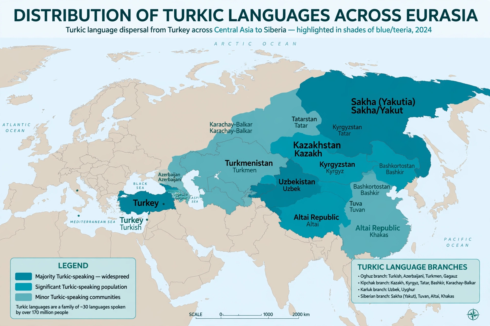

| Turkic languages | |
 Distribution of Turkic languages | |
| Region | Eastern Europe and West, Central, and North Asia |
|---|---|
| Speakers | Over 200 million |
| Branches | Oghuz, Karluk, Kipchak, Oghur, Siberian, Arghu |
| Earliest records | Orkhon inscriptions, 8th century AD |
The Turkic languages are a language family of more than 35 documented languages spoken by the Turkic peoples across a vast belt of Eurasia, from the Balkans and Anatolia through Central Asia to Siberia. The largest by far is Turkish, with around 80–90 million speakers; others include Azerbaijani, Uzbek, Kazakh, Uyghur, Tatar, Kyrgyz, Turkmen, and Yakut (Sakha). In total the family has over 200 million speakers.
Turkic languages are strongly agglutinative, building long words from suffixes; they typically show vowel harmony, subject–object–verb word order, postpositions rather than prepositions, and no grammatical gender. A large degree of mutual intelligibility exists among geographically close languages, especially within the Oghuz group (Turkish, Azerbaijani, Turkmen).
The earliest substantial records are the 8th-century Orkhon inscriptions of the Göktürks in Mongolia, written in a runiform script. Turkic peoples spread westward with the Seljuks and Ottomans and eastward across the steppe. Over history the languages have been written in runic, Uyghur, Arabic, Latin, and Cyrillic scripts; Turkey adopted a Latin alphabet in 1928, and several Central Asian states have moved from Cyrillic toward Latin scripts since 1991. The proposition that Turkic belongs with Mongolic and Tungusic in an "Altaic" family is now rejected by most specialists.